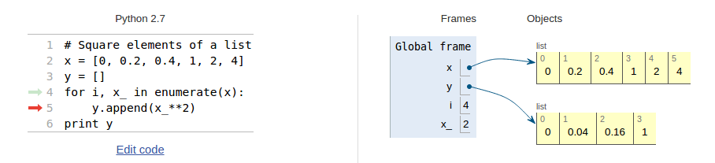

Illustration of table of columns

-20 -4.0
-15 5.0
-10 14.0
-5 23.0
0 32.0
5 41.0
10 50.0
15 59.0
20 68.0
25 77.0
30 86.0
35 95.0
40 104.0
How can a program write out such a table?
We know how to make one line in the table:
C = -20
F = 9.0/5*C + 32
print C, F
We can just repeat these statements:
C = -20; F = 9.0/5*C + 32; print C, F
C = -15; F = 9.0/5*C + 32; print C, F
...
C = 35; F = 9.0/5*C + 32; print C, F
C = 40; F = 9.0/5*C + 32; print C, F
A while loop executes repeatedly a set of statements as long as a boolean condition is true
while condition:
<statement 1>
<statement 2>
...
<first statement after loop>
print '------------------' # table heading
C = -20 # start value for C
dC = 5 # increment of C in loop
while C <= 40: # loop heading with condition
F = (9.0/5)*C + 32 # 1st statement inside loop
print C, F # 2nd statement inside loop
C = C + dC # last statement inside loop
print '------------------' # end of table line
Let us simulate the while loop by hand:
C is -20, \( -20 \leq 40 \) is true, therefore we execute the loop statementsF, print, and update C to -15while line, evaluate \( C\leq 40 \), which is true, hence a new round in the loopC is updated to 45
An expression with value true or false is called a boolean expression. Examples: \( C=40 \), \( C\neq 40 \), \( C\geq 40 \), \( C>40 \), \( C < 40 \).
C == 40 # note the double ==, C = 40 is an assignment!
C != 40
C >= 40
C > 40
C < 40
We can test boolean expressions in a Python shell:
>>> C = 41
>>> C != 40
True
>>> C < 40
False
>>> C == 41
True
Several conditions can be combined with and/or:
while condition1 and condition2:
...
while condition1 or condition2:
...
Rule 1: C1 and C2 is True if both C1 and C2 are True
Rule 2: C1 or C2 is True if one of C1 or C2 is True
>>> x = 0; y = 1.2
>>> x >= 0 and y < 1
False
>>> x >= 0 or y < 1
True
>>> x > 0 or y > 1
True
>>> x > 0 or not y > 1
False
>>> -1 < x <= 0 # -1 < x and x <= 0
True
>>> not (x > 0 or y > 0)
False
So far, one variable has referred to one number (or string), but sometimes we naturally have a collection of numbers, say degrees \( -20, -15, -10, -5, 0, \ldots, 40 \)
Simple solution: one variable for each value
C1 = -20
C2 = -15
C3 = -10
...
C13 = 40
Stupid and boring solution if we have many values!
Better: a set of values can be collected in a list
C = [-20, -15, -10, -5, 0, 5, 10, 15, 20, 25, 30, 35, 40]
Now there is one variable, C, holding all the values
Initialize with square brackets and comma between the Python objects:
L1 = [-91, 'a string', 7.2, 0]
Elements are accessed via an index: L1[3] (index=3).
List indices start at 0: 0, 1, 2, ... len(L1)-1.
>>> mylist = [4, 6, -3.5]
>>> print mylist[0]
4
>>> print mylist[1]
6
>>> print mylist[2]
-3.5
>>> len(mylist) # length of list
3
>>> C = [-10, -5, 0, 5, 10, 15, 20, 25, 30]
>>> C.append(35) # add new element 35 at the end
>>> C
[-10, -5, 0, 5, 10, 15, 20, 25, 30, 35]
>>> C = C + [40, 45] # extend C at the end
>>> C
[-10, -5, 0, 5, 10, 15, 20, 25, 30, 35, 40, 45]
>>> C.insert(0, -15) # insert -15 as index 0
>>> C
[-15, -10, -5, 0, 5, 10, 15, 20, 25, 30, 35, 40, 45]
>>> del C[2] # delete 3rd element
>>> C
[-15, -10, 0, 5, 10, 15, 20, 25, 30, 35, 40, 45]
>>> del C[2] # delete what is now 3rd element
>>> C
[-15, -10, 5, 10, 15, 20, 25, 30, 35, 40, 45]
>>> len(C) # length of list
11
>>> C.index(10) # index of the first element with value 10
3
>>> 10 in C # is 10 an element in C?
True
>>> C[-1] # the last list element
45
>>> C[-2] # the next last list element
40
>>> somelist = ['book.tex', 'book.log', 'book.pdf']
>>> texfile, logfile, pdf = somelist # assign directly to variables
>>> texfile
'book.tex'
>>> logfile
'book.log'
>>> pdf
'book.pdf'
Use a for loop to loop over a list and process each element:
As with while loops, the statements in the loop must be indented!
degrees = [0, 10, 20, 40, 100]
for C in degrees:
print C
print 'The degrees list has', len(degrees), 'elements'
Simulation by hand:
C is 0C is 10 ...and so on...C is 20 ...and so on...C is 100, now the loop is over and the program flow jumps to the first statement with the same indentation as the for C in degrees line
Cdegrees = [-20, -15, -10, -5, 0, 5, 10, 15,
20, 25, 30, 35, 40]
for C in Cdegrees:
F = (9.0/5)*C + 32
print C, F
Note: print C, F gives ugly output. Use printf syntax to nicely
format the two columns:
print '%5d %5.1f' % (C, F)
Output:
-20 -4.0
-15 5.0
-10 14.0
-5 23.0
0 32.0
......
35 95.0
40 104.0
The for loop
for element in somelist:
# process element
can always be transformed to a corresponding while loop
index = 0
while index < len(somelist):
element = somelist[index]
# process element
index += 1
But not all while loops can be expressed as for loops!
Cdegrees = [-20, -15, -10, -5, 0, 5, 10,
15, 20, 25, 30, 35, 40]
index = 0
while index < len(Cdegrees):
C = Cdegrees[index]
F = (9.0/5)*C + 32
print '%5d %5.1f' % (C, F)
index += 1
$$ S = \sum_{i=1}^N i^2 $$
N = 14
S = 0
for i in range(1, N+1):
S += i**2
Or (less common):
S = 0
i = 1
while i <= N:
S += i**2
i += 1
Mathematical sums appear often so remember the implementation!
Let us put all the Fahrenheit values in a list as well:
print Fdegrees results in
[-4.0, 5.0, 14.0, 23.0, 32.0, 41.0, 50.0, 59.0,
68.0, 77.0, 86.0, 95.0, 104.0]
For loops usually loop over list values (elements):
for element in somelist:
# process variable element
We can alternatively loop over list indices:
for i in range(0, len(somelist), 1):
element = somelist[i]
# process element or somelist[i] directly
range(start, stop, inc) generates a list of integers start, start+inc, start+2*inc, and so on up to, but not including, stop.
range(stop) is short for range(0, stop, 1).
>>> range(3) # = range(0, 3, 1)
[0, 1, 2]
>>> range(2, 8, 3)
[2, 5]
>>> v = [-1, 1, 10]
>>> for e in v:
... e = e + 2
...
>>> v
[-1, 1, 10] # unaltered!!
What is the problem?
Inside the loop, e is an ordinary (int) variable, first time e becomes 1, next time e becomes 3, and then 12 - but the list v is unaltered
Solution: must index a list element to change its value:
>>> v[1] = 4 # assign 4 to 2nd element (index 1) in v
>>> v
[-1, 4, 10]
>>>
>>> for i in range(len(v)):
... v[i] = v[i] + 2
...
>>> v
[1, 6, 12]
n = 16
Cdegrees = []; Fdegrees = [] # empty lists
for i in range(n):
Cdegrees.append(-5 + i*0.5)
Fdegrees.append((9.0/5)*Cdegrees[i] + 32)
Python has a compact construct, called list comprehension, for generating lists from a for loop:
Cdegrees = [-5 + i*0.5 for i in range(n)]
Fdegrees = [(9.0/5)*C + 32 for C in Cdegrees]
General form of a list comprehension:
somelist = [expression for element in somelist]
where expression involves element
Solution 1: loop over indices
for i in range(len(Cdegrees)):
print Cdegrees[i], Fdegrees[i]
Solution 2: use the zip construct (more "Pythonic"):
for C, F in zip(Cdegrees, Fdegrees):
print C, F
Example with three lists:
>>> l1 = [3, 6, 1]; l2 = [1.5, 1, 0]; l3 = [9.1, 3, 2]
>>> for e1, e2, e3 in zip(l1, l2, l3):
... print e1, e2, e3
...
3 1.5 9.1
6 1 3
1 0 2
Cdegrees = range(-20, 41, 5)
Fdegrees = [(9.0/5)*C + 32 for C in Cdegrees]
table1 = [Cdegrees, Fdegrees] # list of two lists
print table1[0] # the Cdegrees list
print table1[1] # the Fdegrees list
print table1[1][2] # the 3rd element in Fdegrees
table = [Cdegrees,Fdegrees] is a table of (two) columns[C,F] pair:
table2 = []
for C, F in zip(Cdegrees, Fdegrees):
row = [C, F]
table2.append(row)
# more compact with list comprehension:
table2 = [[C, F] for C, F in zip(Cdegrees, Fdegrees)]
print table2
[[-20, -4.0], [-15, 5.0], ......., [40, 104.0]]
Iteration over a nested list:
for C, F in table2:
# work with C and F from a row in table2
# or
for row in table2:
C, F = row
...

We can easily grab parts of a list:
>>> A = [2, 3.5, 8, 10]
>>> A[2:] # from index 2 to end of list
[8, 10]
>>> A[1:3] # from index 1 up to, but not incl., index 3
[3.5, 8]
>>> A[:3] # from start up to, but not incl., index 3
[2, 3.5, 8]
>>> A[1:-1] # from index 1 to next last element
[3.5, 8]
>>> A[:] # the whole list
[2, 3.5, 8, 10]
Note: sublists (slices) are copies of the original list!
for C, F in table2[Cdegrees.index(10):Cdegrees.index(35)]:
print '%5.0f %5.1f' % (C, F)
table2Cdegrees.index(10), Cdegrees.index(35), i.e., the indices corresponding to elements 10 and 35Output:
10 50.0 15 59.0 20 68.0 25 77.0 30 86.0
List with many indices: somelist[i1][i2][i3]...
for i1 in range(len(somelist)):
for i2 in range(len(somelist[i1])):
for i3 in range(len(somelist[i1][i2])):
for i4 in range(len(somelist[i1][i2][i3])):
value = somelist[i1][i2][i3][i4]
# work with value
for sublist1 in somelist:
for sublist2 in sublist1:
for sublist3 in sublist2:
for sublist4 in sublist3:
value = sublist4
# work with value
Simulate this program by hand!
How can we index element with value 5?
Tuples are constant lists that cannot be changed:
>>> t = (2, 4, 6, 'temp.pdf') # define a tuple
>>> t = 2, 4, 6, 'temp.pdf' # can skip parenthesis
>>> t[1] = -1
...
TypeError: object does not support item assignment
>>> t.append(0)
...
AttributeError: 'tuple' object has no attribute 'append'
>>> del t[1]
...
TypeError: object doesn't support item deletion
Tuples can do much of what lists can do:
>>> t = t + (-1.0, -2.0) # add two tuples
>>> t
(2, 4, 6, 'temp.pdf', -1.0, -2.0)
>>> t[1] # indexing
4
>>> t[2:] # subtuple/slice
(6, 'temp.pdf', -1.0, -2.0)
>>> 6 in t # membership
True

While loops and for loops:
while condition:
<block of statements>
for element in somelist:
<block of statements>
Lists and tuples:
mylist = ['a string', 2.5, 6, 'another string']
mytuple = ('a string', 2.5, 6, 'another string')
mylist[1] = -10
mylist.append('a third string')
mytuple[1] = -10 # illegal: cannot change a tuple
| Construction | Meaning |
|---|---|
a = [] | initialize an empty list |
a = [1, 4.4, 'run.py'] | initialize a list |
a.append(elem) | add elem object to the end |
a + [1,3] | add two lists |
a.insert(i, e) | insert element e before index i |
a[3] | index a list element |
a[-1] | get last list element |
a[1:3] | slice: copy data to sublist (here: index 1, 2) |
del a[3] | delete an element (index 3) |
a.remove(e) | remove an element with value e |
a.index('run.py') | find index corresponding to an element's value |
'run.py' in a | test if a value is contained in the list |
a.count(v) | count how many elements that have the value v |
len(a) | number of elements in list a |
min(a) | the smallest element in a |
max(a) | the largest element in a |
sum(a) | add all elements in a |
sorted(a) | return sorted version of list a |
reversed(a) | return reversed sorted version of list a |
b[3][0][2] | nested list indexing |
isinstance(a, list) | is True if a is a list |
type(a) is list | is True if a is a list |
src/misc/Oxford_sun_hours.txt: data of the no of sun hours in Oxford, UK, for every month since Jan, 1929:
[
[43.8, 60.5, 190.2, ...],
[49.9, 54.3, 109.7, ...],
[63.7, 72.0, 142.3, ...],
...
]
Tasks:
data = [
[43.8, 60.5, 190.2, ...],
[49.9, 54.3, 109.7, ...],
[63.7, 72.0, 142.3, ...],
...
]
monthly_mean = [0]*12
for month in range(1, 13):
m = month - 1 # corresponding list index (starts at 0)
s = 0 # sum
n = 2009 - 1929 + 1 # no of years
for year in range(1929, 2010):
y = year - 1929 # corresponding list index (starts at 0)
s += data[y][m]
monthly_mean[m] = s/n
month_names = ['Jan', 'Feb', 'Mar', 'Apr', 'May', 'Jun',
'Jul', 'Aug', 'Sep', 'Oct', 'Nov', 'Dec']
# nice printout:
for name, value in zip(month_names, monthly_mean):
print '%s: %.1f' % (name, value)
max_value = max(monthly_mean)
month = month_names[monthly_mean.index(max_value)]
print '%s has best weather with %.1f sun hours on average' % \
(month, max_value)
max_value = -1E+20
for i in range(len(monthly_mean)):
value = monthly_mean[i]
if value > max_value:
max_value = value
max_i = i # store index too
print '%s has best weather with %.1f sun hours on average' % \
(month_names[max_i], max_value)
decade_mean = []
for decade_start in range(1930, 2010, 10):
Jan_index = 0; Dec_index = 11 # indices
s = 0
for year in range(decade_start, decade_start+10):
y = year - 1929 # list index
print data[y-1][Dec_index] + data[y][Jan_index]
s += data[y-1][Dec_index] + data[y][Jan_index]
decade_mean.append(s/(20.*30))
for i in range(len(decade_mean)):
print 'Decade %d-%d: %.1f' % \
(1930+i*10, 1939+i*10, decade_mean[i])
Complete code: src/looplist/sun_data.py
A debugger is a program that can be used to inspect and understand programs. Example:
In [1]: run -d some_program.py
ipdb> continue # or just c (go to first statement)
1---> 1 g = 9.81; v0 = 5
2 dt = 0.05
3
ipdb> step # or just s (execute next statement)
ipdb> print g
Out[1]: 9.8100000000000005
ipdb> list # or just l (list parts of the program)
1 1 g = 9.81; v0 = 5
----> 2 dt = 0.05
3
4 def y(t):
5 return v0*t - 0.5*g*t**2
6
ipdb> break 15 # stop program at line 15
ipdb> c # continue to next break point
math module?pydoc math in the terminal window (briefer description)
For a newbie it is difficult to read manuals (intended for experts!) - you will need a lot of training; just browse, don't read everything, try to dig out the key info.
It's much like googling in general: only a fraction of the information is relevant for you.